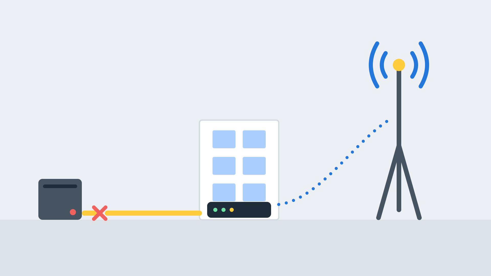
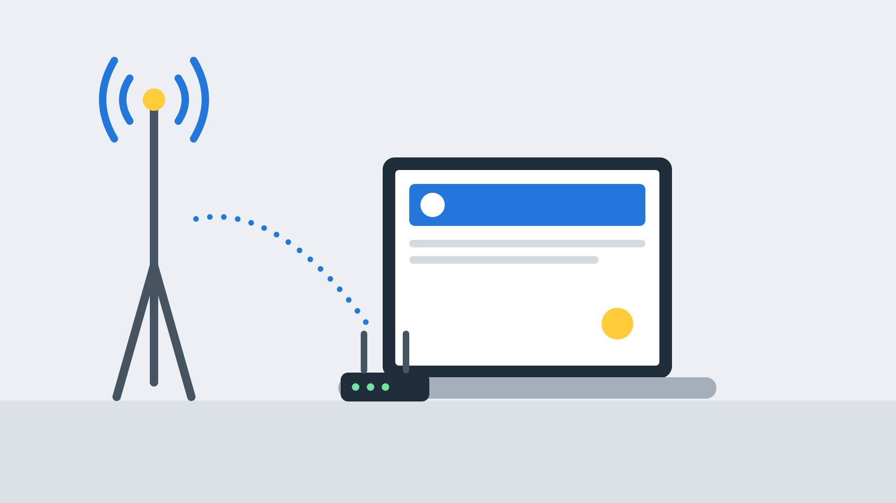

4G/5G Backup
Stay online when your main line fails, with automatic failover to a mobile network.
Stay online when your main line fails
Lines get cut and exchanges fail. A 4G/5G backup connection watches your main line, and when it detects a problem it switches your traffic to a mobile network automatically. When the main line returns, it switches back.
- Automatic failover with no manual steps
- Keeps phones, card payments and cloud apps running
- Quick to install, with no new cable
- Works alongside any main connection

4G backup for business continuity
One fault should not stop your business
Keep taking payments
Card terminals and EPOS keep working during an outage.
Keep phones working
Hosted phones and SIP trunks stay online.
Keep cloud apps running
Email, CRM and remote access continue.
Fast to deploy
Often installed with no engineer visit to the street.
Automatic
Switch over and back happen without anyone stepping in.
Different path
A mobile link avoids a fault on your fixed line.
How broadband failover works
Monitor
A failover router continually tests your main connection.
Detect
If tests fail repeatedly, it treats the line as down.
Switch
Traffic is moved to the 4G/5G SIM automatically.
Return
When the main line is healthy again, traffic moves back.
4G or 5G backup broadband?
| 4G | 5G | |
|---|---|---|
| Best for | Email, cloud apps, card payments and calls | Heavier use, or where backup also carries a lot of traffic |
| Speed | Typically enough to keep a small office running | Faster, depending on local coverage |
| Coverage | Widely available | Growing, but varies by location |
Getting the details right
Signal
Placement of the router and antenna affects speeds, so we test signal on site.
Data allowance
Backup SIMs carry data limits. We recommend plans and alerts so a long outage does not cause bill shock.
Keeping services connected
Some services, such as VPNs and hosted phones, can drop when the address changes. We configure failover to handle this.
4G/5G as a main connection
Mobile broadband can also be your main connection where fixed lines are not available, such as for temporary sites, pop-up offices and events.
- Temporary and pop-up sites
- Rural locations with limited broadband
- Quick starts while a fixed line is ordered

How to add a leased line backup or 4G failover
Assess
We look at your main connection and what must stay online.
Specify
We recommend the router, SIP and data plan.
Install
We install, test the signal and configure failover.
Monitor
We support the service and handle any changes.
Broadband backup FAQs
Will I notice when it switches?
Short interruptions can happen, but most services carry on. We configure the router to keep important services connected.
Can it back up a leased line?
Yes. Many customers pair a leased line or fibre with 4G/5G backup for resilience.
What does it cost?
Typically a router plus a monthly SIM plan. We quote based on how much data you need.
What about data limits?
Backup SIMs usually have data allowances. We help you choose a plan and set usage alerts.
Is it a replacement for a second fixed line?
It is a quick, cost-effective backup. For critical sites, a second fixed line on a separate route may also be worth considering.
Explore more connectivity
Leased lines
Dedicated, uncontended internet and Ethernet circuits with speeds and SLAs to suit.
Read more →Lines and calls
PSTN, analogue and ISDN lines, call packages and your move to digital voice.
Read more →Get a backup connectivity quote
Tell us what must stay online and we will recommend a backup.